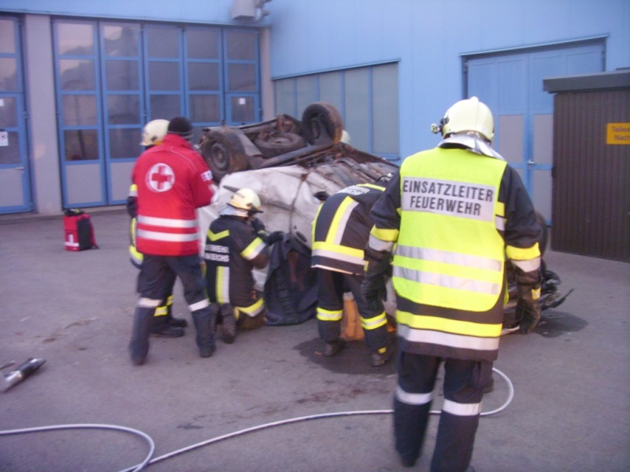

Gemeinsame technische Übung der Feuerwehren Vitis und Heinreichs sowie drei First Respondern.
Am 31.10. um 16.30 Uhr fand eine gemeinsame technische Einsatzübung statt. Auf einem Firmenarealwurde ein Verkehrsunfall mit zwei beteiligten Fahrzeugen und 3 eingeklemmten Personen dargestellt.
Den beteiligten Feuerwehrangehörigen war vor Beginn der Übung die Lage nicht bekannt. Erschwert
wurde das Einsatzgeschehen durch die herschende Finsternis. Aufgaben: Absicherung der Einsatzstelle. Aufbau eines ausreichenden Brandschutzes. Rettung der
eingeklemmten Personen aus den Unfallfahrzeugen unter Einsatz der hydraulischen Rettungsgeräte
der beiden Feuerwehren und Übergabe der Verletzten an die anwesenden Rettungssanitäter. Ein herzlicher Dank gilt den Firmen Hochleitner GmbH und Rammel GmbH für die zur Verfügungstellung des
Übungsgeländes und der Unfallfahrzeuge. 
Der Artikel wurde von der FF Vitis übernommen. Link: Bericht der FF Vitis